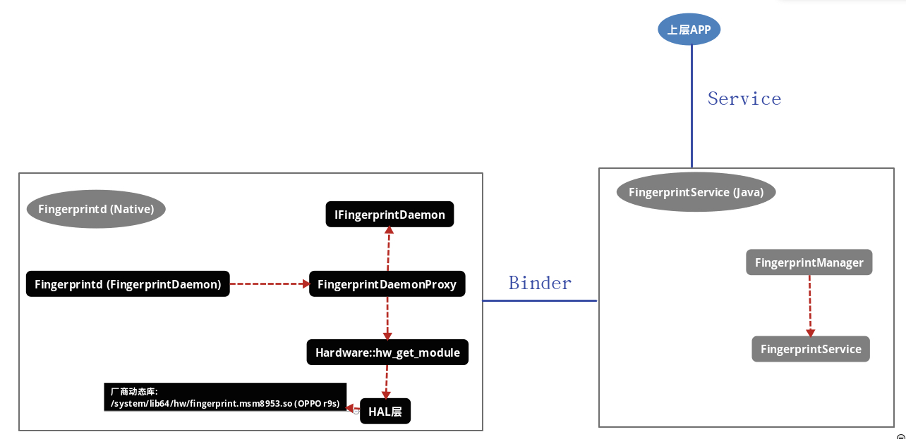
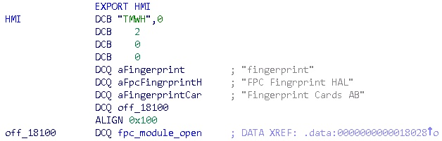
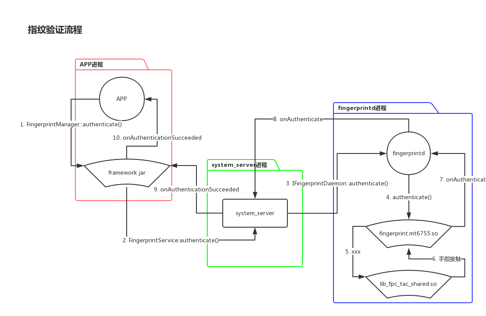

Mtk & Qualcomm 指纹架构安全
一、背景
1.1 评估目的
评估市场主流Android手机的指纹认证方案的架构设计，及其安全性。
1.2 评估思路
以Android的fingerprint框架为指导，对指纹验证的整条调用链路进行梳理，并做出安全评估。例如：
app > framework > service > hal > driver
流程、实现中。是否可能存在接口权限、中间数据、业务逻辑导致的风险。
1.3 评估设备
目前硬件TEE已经普及，所以主流指纹方案都依赖于TEE。所以芯片方案的差异会导致指纹方案具有较大的差异，为了能够兼顾市面上最主流的两款方案：MTK、QUALCOMM，所以挑选了两款分别搭载了这两大方案的设备进行评估：
- GIONEE M6 # 基于MT6755
- OPPO r9s # 基于MSM8953
当然目前市场上已经存在基于TEE方案的专业供应商，比如OPPO R9s就采用了Goodix供应商的指纹方案。
1.4 评估纬度
本次不会对指纹的核心比对算法进行安全评估，因为：
- 比对算法实现大多位于TEE中，无法接触到代码逻辑
- 比对算法涉及超出个人的能力范围
评估只针对数据传播、调用流程、权限管控等角度开展。
二、 Android原生Fingerprint框架
r9s的指纹识别框架是在Android标准框架上进行的，所以先从android原生框架入手了解

2.1 Fingerprintd (FingerprintdDaemon)
以6.01为例, 以下便是编译成fingerprintd的所有文件，源码位于: /system/core/fingerprintd/
Android.mk
fingerprintd.cpp
FingerprintDaemonProxy.cpp
FingerprintDaemonProxy.h
IFingerprintDaemon.cpp
IFingerprintDaemon.h
IFingerprintDaemonCallback.cpp
IFingerprintDaemonCallback.h
以上文件按功能可划分为四个部分：
| 文件 | 功能介绍 |
|---|---|
| fingerprintd.cpp | 负责将fingerprintd加入到ServiceManager中，以便Java层能够获取FingerprintService. |
| IFingerprintDaemon.h / .cpp | 负责fingerprintd与Java层ServiceManager的Binder通信. |
| IFingerprintDaemonCallback.h / .cpp | 同上，这里定义的是一些回调至ServiceManager的Callback接口. |
| FingerprintDaemonProxy.h / .cpp | 负责fingerprintd和Fignerprint hal层的通信. |
1. 在system_server进程启动后，class: SystemServer::startOtherServices()被调用，在这里FingerprintService服务会被start.
// xref: /frameworks/base/services/java/com/android/server/SystemServer.java
private void startOtherServices() {
//...
mSystemServiceManager.startService(TrustManagerService.class);
mSystemServiceManager.startService(FingerprintService.class); // 启动FingerprintService服务
//...
}
2. FingerprintService被start后，onStart()会尝试获取mDaemon与Pingerprintd建立连接。然后调用IFingerprintDaemon::openHal()初始化底层硬件.
// xref: /frameworks/base/services/core/java/com/android/server/fingerprint/FingerprintService.java
@Override
public void onStart() {
publishBinderService(Context.FINGERPRINT_SERVICE, new FingerprintServiceWrapper());
IFingerprintDaemon daemon = getFingerprintDaemon();
if (DEBUG) Slog.v(TAG, "Fingerprint HAL id: " + mHalDeviceId);
listenForUserSwitches();
}
// xref: /frameworks/base/services/core/java/com/android/server/fingerprint/FingerprintService.java
public IFingerprintDaemon getFingerprintDaemon() {
if (mDaemon == null) {
mDaemon = IFingerprintDaemon.Stub.asInterface(ServiceManager.getService(FINGERPRINTD));
if (mDaemon != null) {
try {
mDaemon.asBinder().linkToDeath(this, 0);
mDaemon.init(mDaemonCallback); // 设置回调函数
mHalDeviceId = mDaemon.openHal(); // 初始化硬件
//...
}
return mDaemon;
}
以上为ServiceManager -> fingerprintd的初始化流程。以下介绍fingerprintd -> hal -> hardware的初始化流程：
fingerprintd自身的代码位于: /system/core/fingerprintd/
1. fingerprintd收到openHal();的调用后会依照HAL的标准流程, 与指纹设备建立连接
// xref: /system/core/fingerprintd/FingerprintDaemonProxy.cpp
int64_t FingerprintDaemonProxy::openHal() {
ALOG(LOG_VERBOSE, LOG_TAG, "nativeOpenHal()\n");
int err;
const hw_module_t *hw_module = NULL;
if (0 != (err = hw_get_module(FINGERPRINT_HARDWARE_MODULE_ID, &hw_module))) {
ALOGE("Can't open fingerprint HW Module, error: %d", err);
return 0;
}
//...
mModule = reinterpret_cast<const fingerprint_module_t*>(hw_module);
//...
hw_device_t *device = NULL;
if (0 != (err = mModule->common.methods->open(hw_module, NULL, &device))) {
ALOGE("Can't open fingerprint methods, error: %d", err);
return 0;
}
if (kVersion != device->version) {
ALOGE("Wrong fp version. Expected %d, got %d", kVersion, device->version);
// return 0; // FIXME
}
mDevice = reinterpret_cast<fingerprint_device_t*>(device);
err = mDevice->set_notify(mDevice, hal_notify_callback);
//...
// Sanity check - remove
if (mDevice->notify != hal_notify_callback) {
ALOGE("NOTIFY not set properly: %p != %p", mDevice->notify, hal_notify_callback);
}
ALOG(LOG_VERBOSE, LOG_TAG, "fingerprint HAL successfully initialized");
return reinterpret_cast<int64_t>(mDevice); // This is just a handle
}
2. fingerprintd通过hw_get_module() 得到hw目录下厂商提供的指纹识别hal模块(如：/system/lib64/hw/fingerprint.default.so).
aosp中提供了一套fingerprint hal的空框架, 需要厂商自行实现，位于: /hardware/libhardware/modules/fingerprint/fingerprint.c
// xref: /hardware/libhardware/modules/fingerprint/fingerprint.c
static int fingerprint_open(const hw_module_t* module, const char __unused *id,
hw_device_t** device)
{
if (device == NULL) {
ALOGE("NULL device on open");
return -EINVAL;
}
// ...
}
3. fingerprint.xxx.so加载后被fingerprintd调用其的fingerprint_open用于初始化该厂商自己的指纹模块。内部实现通过Android操作hal的标准接口
以上流程完成后，上层APP可以通过FingerprintManager或FingerprintManagerCompat(上层提供了两套接口，可任意选其一)进行指纹操作的使用.
三、GIONEE M6 底层实现（基于MT6755）
3.1 HAL初始化
1. 这里接上节，调用至hw_get_mogule()后, GIONEE M6上的“/system/lib64/hw/fingerprint.mt6755.so”被加载
在/system/libx/hw目录下的所有hal文件都会向外导出一个名为hw_module_t HAL_MODULE_INFO_SYM 的结构体符号.
这样系统可通过此导出结构体来得到一些关键信息， 比如下例中.methods字段中包含了有关指纹设备操作的关键函数：
// xref: /hardware/libhardware/modules/fingerprint/fingerprint.c
fingerprint_module_t HAL_MODULE_INFO_SYM = {
.common = {
.tag = HARDWARE_MODULE_TAG,
.module_api_version = FINGERPRINT_MODULE_API_VERSION_2_0,
.hal_api_version = HARDWARE_HAL_API_VERSION,
.id = FINGERPRINT_HARDWARE_MODULE_ID, // <-- "fingerprint", 这里的字符串即为hw_get_mogule()的第一个参数.
.name = "FPC Fingrprint HAL",
.author = "Fingerprint Cards AB",
.methods = &fingerprint_module_methods,
},
.init = fpc_module_open, };
编译后表现为名为HMI的导出符号：

2. 这里以FingerprintDaemonProxy::openHal(对应fingerprintd中名为”nativeOpenHal”的native函数)为起点继续对 fingerprint.mt6755.so 进行分析.
进入后，首先调用hw_get_module("fingerprint", &v18);对hal进行加载，这里对应的hal为: fingerprint.mt6755.so :
// pos: fingerprintd
__int64 __fastcall nativeOpenHal(__int64 a1, __int64 a2, __int64 a3, void *a4, void *a5)
{ v5 = a1;
__android_log_print(2LL, (__int64)"fingerprintd", "nativeOpenHal()\n", a4, a5);
v18 = 0LL;
v6 = hw_get_module("fingerprint", &v18); // <-- 首先加载hal模块： fingerprint.mt6755.so， 执行结束后v12+128将被置为fpc_set_notify指针
if ( v6 )
{
__android_log_print(6LL, (__int64)"fingerprintd", "Can't open fingerprint HW Module, error: %d", (void *)v6, v7);
result = 0LL;
// ...
*(_QWORD *)(v5 + 48) = v12;
v14 = (*(__int64 (__fastcall **)(__int64, __int64 (__fastcall *)(_DWORD *)))(v12 + 128))(v12, sub_5228); // fpc_set_notify() <-- 这里注册指纹通知
if ( v14 & 0x80000000 )
{
// ...
}
else
{
v16 = *(__int64 (__fastcall **)(_DWORD *))(*(_QWORD *)(v5 + 48) + 120LL);
if ( v16 != sub_5228 )
__android_log_print(6LL, (__int64)"fingerprintd", "NOTIFY not set properly: %p != %p", v16, sub_5228);
__android_log_print(2LL, (__int64)"fingerprintd", "fingerprint HAL successfully initialized", v16, v15);
result = *(_QWORD *)(v5 + 48);
}
}
}
// ...
}
return result;
}
3. 当hw_get_module("fingerprint", &v18);被调用后， fingerprint.mt6755.so 即被加载并触发init方法fpc_model_open:
// pos: fingerprint.mt6755.so
signed __int64 __fastcall fpc_module_open(__int64 a1, __int64 a2, __int64 *a3)
{
__int64 *v3; // x20@1
__int64 v4; // x24@1
__int64 v5; // x19@1
__int64 v6; // x0@2
unsigned int v7; // w23@3
__int64 v8; // x0@4
__int64 v9; // x0@5
v3 = a3;
v4 = a1;
__android_log_print(3LL, "fpc_fingerprint_hal", "%s", "fpc_module_open");
__android_log_print(3LL, "fpc_fingerprint_hal", "%s", "gn_fpc_hw_reset");
gn_sysfs_node_write("/sys/devices/fpc_interrupt/hw_reset", "reset");
*v3 = 0LL;
v5 = malloc(4528LL);
if ( !v5 )
return (unsigned int)-12;
memset();
pthread_mutex_init(v5 + 256, 0LL);
// 填充指纹操作函数，此函数返回后. 该结构体将以参数形式从hw_get_module()中返回.
*(_QWORD *)(v5 + 8) = v4;
*(_DWORD *)(v5 + 4) = 512;
*(_DWORD *)v5 = 0x48574454;
*(_QWORD *)(v5 + 0x70) = fpc_module_close;
*(_QWORD *)(v5 + 0x90) = fpc_enroll;
*(_QWORD *)(v5 + 0xA8) = fpc_cancel;
*(_QWORD *)(v5 + 0xB8) = fpc_remove;
*(_QWORD *)(v5 + 0x80) = fpc_set_notify;
*(_QWORD *)(v5 + 0x78) = 0LL;
*(_QWORD *)(v5 + 0xC8) = fpc_authenticate;
*(_QWORD *)(v5 + 0x88) = fpc_pre_enroll;
*(_QWORD *)(v5 + 0xB0) = fpc_enumerate;
*(_QWORD *)(v5 + 0xA0) = fpc_get_authenticator_id;
*(_QWORD *)(v5 + 0xC0) = fpc_set_active_group;
*(_QWORD *)(v5 + 0x98) = fpc_post_enroll;
v6 = fpc_tee_init();
*(_QWORD *)(v5 + 328) = v6;
if ( v6 )
{
v7 = fpc_tee_init_hw_auth();
if ( !v7 )
{
v8 = fpc_worker_new();
*(_QWORD *)(v5 + 248) = v8;
if ( v8 )
{
v9 = fpc_sensortest_new(v5, *(_QWORD *)(v5 + 304));
*(_QWORD *)(v5 + 296) = v9;
if ( v9 )
{
fpc_extension_start(*(_QWORD *)(v5 + 304), v9, *(_QWORD *)(v5 + 312), *(_QWORD *)(v5 + 320));
*v3 = v5;
fingerprint_hal_resume(v5);
return v7;
}
}
}
}
__android_log_print(6LL, "fpc_fingerprint_hal", "%s failed\n", "fpc_module_open");
fpc_module_close((_QWORD *)v5);
return 0xFFFFFFFFLL;
}
4. 以上函数调用完成，返回至fingerprintd中的nativeOpenHal(). 这样fingerprint.mt6755.so内的fpc_set_notify函数指针会被fingerprintd调用，用来设置指纹事件回调.
这里的回调最终会通过Binder调用到Java层当初设置的mCallback中(IFingerprintDaemon::init(mCallback)).
// pos: fingerprintd
v14 = (*(__int64 (__fastcall **)(__int64, __int64 (__fastcall *)(_DWORD *)))(v12 + 128))(v12, sub_5228); // fpc_set_notify() <-- 这里注册指纹通知
3.2 指纹验证流程

1. 当应用层调用framework.jar中的FingerprintManager::authenticate()方法时，会先进行参数的转换，以便后续调用到services.jar中的FingerprintService::authenticate()：
转换方法如下：
// pos: framework.jar
// xref: /frameworks/base/services/core/java/com/android/server/fingerprint/AuthenticationClient.java
@RequiresPermission(USE_FINGERPRINT)
public void authenticate(@Nullable CryptoObject crypto, @Nullable CancellationSignal cancel,
int flags, @NonNull AuthenticationCallback callback, @Nullable Handler handler) {
authenticate(crypto, cancel, flags, callback, handler, UserHandle.myUserId()); // 调用到“内层 authenticate()”函数，前面的参数都不变，最后一个参数传入当前UserId
}
// 内层authenticate
/**
* Per-user version
* @hide
*/
@RequiresPermission(USE_FINGERPRINT)
public void authenticate(@Nullable CryptoObject crypto, @Nullable CancellationSignal cancel,
int flags, @NonNull AuthenticationCallback callback, Handler handler, int userId) {
// ...
if (mService != null) try {
useHandler(handler);
mAuthenticationCallback = callback;
mCryptoObject = crypto;
long sessionId = crypto != null ? crypto.getOpId() : ;
// 从这里开始，调用到FingerprintService
mService.authenticate(mToken, // 这里是一个空的Binder，通过 new Binder()创建的 作用不明？
sessionId, // 这里通过crypto.getOpId()得到，在FingerprintService中称为opId
userId, // 当前调用者的用户Id
mServiceReceiver, // 这里是指纹验证结果的回调，结果会通过此传回
flags, // 直接传递，不转换
mContext.getOpPackageName()); // 调用方的包名
} catch (RemoteException e) {
Log.w(TAG, "Remote exception while authenticating: ", e);
if (callback != null) {
// Though this may not be a hardware issue, it will cause apps to give up or try
// again later.
callback.onAuthenticationError(FINGERPRINT_ERROR_HW_UNAVAILABLE,
getErrorString(FINGERPRINT_ERROR_HW_UNAVAILABLE));
}
}
}
2. 当应用层调用FingerprintService时，会进入在system_server中的FingerprintService$FingerprintServiceWrapper
之所以会进入Wrapper, 是因为FingerprintService在启动时将其与标识”fingerprint”进行了绑定：
// pos: services.jar
// xref: /frameworks/base/services/core/java/com/android/server/fingerprint/FingerprintService.java
public void onStart() {
this.publishBinderService("fingerprint", new FingerprintServiceWrapper(this, null)); // <-- 绑定
this.getFingerprintDaemon();
this.listenForUserSwitches();
this.initPrivateFingerprint();
}
3. 进入FingerprintService$FingerprintServiceWrapper::authenticate():
// pos: services.jar
// xref: /frameworks/base/services/core/java/com/android/server/fingerprint/FingerprintService.java
public void authenticate(IBinder IToken, long opId, int groupId, IFingerprintServiceReceiver Receiver, int nFlags, String opPackageName) {
if(!FingerprintService.canUseFingerprint_(FingerprintService.this, opPackageName, true)) {
return;
}
if(this.getPrivateStatus()) {
// 如果调用者APP为隐私空间，就进入此流程
if(!opPackageName.equals("com.gionee.encryptspace") && !opPackageName.equals(FingerprintService.getKeyguardPackage(FingerprintService.this)) && !opPackageName.equals("com.gionee.amisystem")) {
goto label_74;
}
Slog.d("FingerprintService", "authenticate :" + opPackageName); // private app /
FingerprintService.setPrivateFingerPackageName_(opPackageName);
}
else {
label_74:
FingerprintService.setPrivateFingerPackageName_(null);
}
int nEffectiveGroupId = FingerprintService.this.getEffectiveUserId(groupId);
boolean bRestricted = this.isRestricted();
if(((FingerprintService.inLockoutMode_(FingerprintService.this)) || (FingerprintService.getRestricted())) && (opPackageName.equals(FingerprintService.getKeyguardPackage(FingerprintService.this))) || (opPackageName.equals("com.gionee.amisystem"))) {
// 如果调用者APP为Keyguard或com.gionee.amisystem
// ...
if(FingerprintService.inLockoutMode_(FingerprintService.this)) {
FingerprintService.this.mHandler.postDelayed(FingerprintService.getStartAuthenticationRunnable(FingerprintService.this), 60000);
return;
}
FingerprintService.this.mHandler.postDelayed(FingerprintService.getStartAuthenticationRunnable(FingerprintService.this), 500);
}
else {
// 如果调用者APP为普通应用
if(FingerprintService.getToken() != null && FingerprintService.getReceiver() != null) { // other app
FingerprintService.this.mHandler.removeCallbacks(FingerprintService.getStartAuthenticationRunnable(FingerprintService.this));
FingerprintService.clearAuthenticationData_(FingerprintService.this);
}
FingerprintService.this.mHandler.post(new Runnable(opId, IToken, nEffectiveGroupId, Receiver, nFlags, bRestricted) {
public void run() {
// ...
this.this$1.this$0.startAuthentication(this.val$token, this.val$opId, this.val$effectiveGroupId, this.val$receiver, this.val$flags, this.val$restricted);
}
});
}
}
4. 接上面，跟进startAuthentication(), 这里最后调用了IFingerprintDaemon::authenticate(). 然后通过Binder调用到真正的Server，也就是fingerprintd(FingerprintDaemonProxy.cpp)中：
// pos: services.jar
// xref: /frameworks/base/services/core/java/com/android/server/fingerprint/FingerprintService.java
void startAuthentication(IBinder IBinder, long opId, int UserId, IFingerprintServiceReceiver receiver, int flags, boolean restricted) {
if(this.isSimulated()) {
this.mAuthClient = new ClientMonitor(this, IBinder, opId, receiver, UserId, restricted);
this.handleAuthenticated(547483734688L, 295219575, UserId);
return;
}
IFingerprintDaemon v13 = this.getFingerprintDaemon(); // 得到FingerprintDaemon对象
if(v13 == null) {
Slog.w("FingerprintService", "startAuthentication: no fingeprintd!");
return;
}
// ...
try {
int v15 = v13.authenticate(opId, UserId); // <-- 调用到fingerprintd中fingerprint.mt6755.so的authenticate()函数
if(v15 == 0) {
return;
}
}
// ...
}
从这里开始，执行的流程将从上面的sytem_server进入fingerprintd进程。
5. 以上system_server中的JAVA代码调用v13.authenticate()后，流程将进入fingerprintd进程内fingerprint.mt6755.so模块中的authenticate()函数：
// pos: fingerprint.mt6755.so
__int64 __fastcall fpc_authenticate(tagDevice *a1, __int64 operation_id, int current_gid__or__current_user_id)
{
__int64 operation_id_1; // x23@1
int current_gid; // w24@1
tagDevice *obj_device; // x19@1
tagTask *pTask; // x0@3
unsigned int v7; // w23@3
operation_id_1 = operation_id;
current_gid = current_gid__or__current_user_id;
obj_device = a1;
__android_log_print(3LL, "fpc_fingerprint_hal", "%s operation_id %lu\n", "fpc_authenticate", operation_id);
pthread_mutex_lock((pthread_mutex_t *)&obj_device->pMutex);
fingerprint_hal_goto_idle();
if ( obj_device->fun_notify_callback )
{
if ( *(_DWORD *)&obj_device->gid == current_gid )
{
pTask = obj_device->pTask;
obj_device->operation_id = operation_id_1;
v7 = 0;
fpc_worker_set_task(pTask, (__int64)func_authenticate_callback, obj_device); // <-- 这里设置手指接触任务回调： arg0: obj_work, arg1: func_callback, arg2: obj_device
}
else
{
v7 = -1;
__android_log_print(3LL, "fpc_fingerprint_hal", "%s finger.gid != current_gid\n", "fpc_authenticate");
}
}
else
{
v7 = -1;
__android_log_print(6LL, "fpc_fingerprint_hal", "%s failed notify not set\n", "fpc_authenticate");
}
fingerprint_hal_resume(obj_device); // <-- 通过以上fpc_worker_set_task设置好任务后， 这里恢复运行，当有手指触摸时将会回调至func_authenticate_callback
pthread_mutex_unlock(&obj_device->pMutex);
return v7;
}
6. 当用户用手指触摸指纹后，上面设置的func_authenticate_callback会被立刻调用：
当该函数被调用时，指纹的“抓取”和“验证”其实还没有开始，该函数的任务就是“抓取”和“验证”指纹：
// pos: fingerprint.mt6755.so
__int64 __fastcall func_authenticate_callback(__int64 a1)
{
pDevice = (tagDevice *)a1;
log(6LL, "fpc_fingerprint_hal", "fpc:%s\n", "do_authenticate");
status_1 = fpc_tee_set_auth_challenge(pDevice->pTee, pDevice->operation_id);
if ( !status_1 )
{
is_capture_failed = 1;
if ( !pDevice->operation_id )
{
status_2 = gn_fpc_tee_capture_image(pDevice->pTee); // 抓取指纹“图像”
is_capture_failed = 0;
if ( status_2 )
{ // 抓取失败
if ( status_2 > 0 )
{
notify_callback_5 = (void (__fastcall *)(tagNotify *))pDevice->fun_notify_callback;
ret.type = 1; // 1. 表示此条通知是：抓取指纹“图像”结果
ret.nGroupId = 5; // 5.表示抓取失败
notify_callback_5(&ret); // do notify
log(6LL, "fpc_fingerprint_hal", "gn_fpc_tee_capture_image fails:FINGERPRINT_ACQUIRED_TOO_FAST\n");
}
log(6LL, "fpc_fingerprint_hal", "gn_fpc_tee_capture_image fails\n");
is_capture_failed = 1;
}
}
if ( is_capture_failed != 1 )
goto CAPTURE_SUCCEED;
// 继续尝试抓取指纹
while ( 1 )
{
while ( 1 )
{
v5 = fpc_tee_capture_image(pDevice->pTee);
status_1 = v5;
if ( v5 <= 0 )
break;
log(6LL, "fpc_fingerprint_hal", "capture image failed!");
ret.type = 1;
notify_callback_3 = (void (__fastcall *)(tagNotify *))pDevice->fun_notify_callback;
ret.nGroupId = 5;
notify_callback_3(&ret);
}
if ( v5 )
break;
CAPTURE_SUCCEED:
notify_callback_2 = (void (__fastcall *)(tagNotify *))pDevice->fun_notify_callback;
v19.type = 1;
v19.nGroupId = 0; // 抓取指纹成功
notify_callback_2(&v19); // do notify
status = fpc_tee_identify(pDevice->pTee, &nFingerprint); // 得到刚才抓取的指纹.nFingerprint
status_1 = status;
if ( status )
{
log(6LL, "fpc_fingerprint_hal", "fpc_tee_identify fails status=%d\n", status);
break;
}
if ( nFingerprint )
{
status_1 = fpc_tee_get_auth_result(pDevice->pTee, &auth_result); // 检查该指纹的授权信息
if ( status_1 )
break;
log(
3LL,
"fpc_fingerprint_hal",
"hat->challenge %lu\n"
"hat->authenticator_id %lu\n"
"hat->authenticator_type %u\n"
"hat->timestamp %lu\n"
"hat->user_id %lu\n"
"hat->version %hhu\n",
auth_result.challenge,
auth_result.authenticator_id,
(unsigned int)auth_result.authenticator_type,
auth_result.timestamp,
auth_result.user_id);
gid = pDevice->gid;
notify_callback_4 = (void (__fastcall *)(tagNotify *))pDevice->fun_notify_callback;
ret.nFingerprint =.nFingerprint; // 指纹验证成功，回传指.nFingerprint
ret.type = 5;
ret.nGroupId = gid;
notify_callback_4(&ret); // do notify
pTee = pDevice->pTee;
return fpc_tee_store_template_db();
}
gid_2 = pDevice->gid;
notify_callback = (void (__fastcall *)(tagNotify *))pDevice->fun_notify_callback;
ret.type = 5;
ret.nGroupId = gid_2;
ret.nFingerprint = 0; // 指纹验证失败
notify_callback(&ret); // do notify
}
}
pError = fpc_error_str(status_1);
result = log(6LL, "fpc_fingerprint_hal", "%s failed %s\n", "do_authenticate", pError);
if ( status_1 != -7 )
{
notify_callback_1 = (__int64 (__fastcall *)(tagNotify *))pDevice->fun_notify_callback;
ret.type = -1; // 失败。。。
ret.nGroupId = 1;
result = notify_callback_1(&ret); // notify
}
return result;
}
7. 当以上验证操作完成并调用notify_callback()反馈结果后，流程会回到fingerprintd(主模块)中的notify_callback:
在以下case 6分支中通过Binder调用system_server中的IFingerprintDaemonCallback::onAuthenticated()，这时FingerprintService便收到了指纹识别事件。
// pos: fingerprintd
__int64 __fastcall notify_callback(_DWORD *pNotify, __int64 a2, __int64 a3, void *a4, void *a5)
{
pNotify_1 = (tagNotify *)pNotify;
pDaemonProxy = (_QWORD *)android::FingerprintDaemonProxy::sInstance;
if ( !android::FingerprintDaemonProxy::sInstance )
{
pDaemonProxy = (_QWORD *)operator new(0x50uLL);
CFingerprintDeamonProxy__CFingerprintDeamonProxy(pDaemonProxy);
android::FingerprintDaemonProxy::sInstance = (__int64)pDaemonProxy;
}
v7 = (_QWORD *)pDaemonProxy[7];
v13 = v7;
if ( v7 && (android::RefBase::incStrong((android::RefBase *)((char *)v7 + *(_QWORD *)(*v7 - 24LL)), &v13), v13) )
{
type = (void *)(unsigned int)pNotify_1->type;
v9 = pDaemonProxy[6];
type_1 = (void *)(unsigned int)((_DWORD)type + 1); // 这里的type+1
switch ( (_DWORD)type_1 )
{
case 0: // onError
__android_log_print(
3LL,
(__int64)"fingerprintd",
"onError(%d)",
(void *)(unsigned int)pNotify_1->nGroupId,
type_1);
result = (*(__int64 (__fastcall **)(_QWORD *, __int64, _QWORD))(*v13 + 48LL))(
v13,
v9,
(unsigned int)pNotify_1->nGroupId);
break;
case 2: // onAcquired
__android_log_print(
3LL,
(__int64)"fingerprintd",
"onAcquired(%d)",
(void *)(unsigned int)pNotify_1->nGroupId,
type_1);
result = (*(__int64 (__fastcall **)(_QWORD *, __int64, _QWORD))(*v13 + 32LL))(
v13,
v9,
(unsigned int)pNotify_1->nGroupId);
break;
case 4: // onEnrollResult
__android_log_print(
3LL,
(__int64)"fingerprintd",
"onEnrollResult.nFingerprint=%d, gid=%d, rem=%d)",
(void *)(unsigned int)pNotify_1->nFingerprintId,
(void *)(unsigned int)pNotify_1->nGroupId,
(unsigned int)pNotify_1[1].type);
result = (*(__int64 (__fastcall **)(_QWORD *, __int64, _QWORD, _QWORD, _QWORD))(*v13 + 24LL))(
v13,
v9,
(unsigned int)pNotify_1->nFingerprintId,
(unsigned int)pNotify_1->nGroupId,
(unsigned int)pNotify_1[1].type);
break;
case 5: // onRemove
__android_log_print(
3LL,
(__int64)"fingerprintd",
"onRemove.nFingerprint=%d, gid=%d)",
(void *)(unsigned int)pNotify_1->nFingerprintId,
(void *)(unsigned int)pNotify_1->nGroupId);
result = (*(__int64 (__fastcall **)(_QWORD *, __int64, _QWORD, _QWORD))(*v13 + 56LL))(
v13,
v9,
(unsigned int)pNotify_1->nFingerprintId,
(unsigned int)pNotify_1->nGroupId);
break;
case 6: // onAuthenticated 指纹验证结果
__android_log_print(
3LL,
(__int64)"fingerprintd",
"onAuthenticated.nFingerprint=%d, gid=%d)",
(void *)(unsigned int)pNotify_1->nFingerprintId,
(void *)(unsigned int)pNotify_1->nGroupId);
.nFingerprint = 0LL;
if ( pNotify_1->nFingerprintId )
{
sub_4AF4((android *)&pNotify_1[1]);
.nFingerprint = (unsigned int)pNotify_1->nFingerprintId;
}
result = (*(__int64 (__fastcall **)(_QWORD *, __int64, __int64, _QWORD))(*v13 + 40LL))( // 这里直接通过Binder调用到system_server的IFingerprintDaemonCallback::onAuthenticated()中.
v13,
v9,
.nFingerprint,
(unsigned int)pNotify_1->nGroupId);
break;
case 7: // onFingerDown
__android_log_print(3LL, (__int64)"fingerprintd", "onFingerDown()", type, type_1);
result = (*(__int64 (__fastcall **)(_QWORD *, __int64))(*v13 + 72LL))(v13, v9);
break;
case 8: // onFingerUp
__android_log_print(3LL, (__int64)"fingerprintd", "onFingerUp()", type, type_1);
result = (*(__int64 (__fastcall **)(_QWORD *, __int64))(*v13 + 80LL))(v13, v9);
break;
case 9: // onWaittingFinger
__android_log_print(3LL, (__int64)"fingerprintd", "onWaittingFinger()", type, type_1);
result = (*(__int64 (__fastcall **)(_QWORD *, __int64))(*v13 + 88LL))(v13, v9);
break;
case 0xA: // onTestCmd
__android_log_print(
3LL,
(__int64)"fingerprintd",
"onTestCmd(cmd=%d, result=%d)\n",
(void *)(unsigned int)pNotify_1->nGroupId,
(void *)(unsigned int)pNotify_1->nFingerprintId);
result = (*(__int64 (__fastcall **)(_QWORD *, __int64, _QWORD, _QWORD))(*v13 + 96LL))(
v13,
v9,
(unsigned int)pNotify_1->nGroupId,
(unsigned int)pNotify_1->nFingerprintId);
break;
default:
result = __android_log_print(6LL, (__int64)"fingerprintd", "invalid msg type: %d", type, type_1);
break;
}
}
else
{
result = __android_log_print(6LL, (__int64)"fingerprintd", "Invalid callback object", a4, a5);
}
if ( v13 )
result = android::RefBase::decStrong((android::RefBase *)((char *)v13 + *(_QWORD *)(*v13 - 24LL)), &v13);
return result;
}
从这里开始，流程将从fingerprintd进程再次回到system_server中，触发指纹事件回调
8. 收到指纹事件回调， 流程回到system_server中的AuthenticationClient::onAuthenticated()
在这个函数中，看到了熟悉的onAuthenticationFailed与onAuthenticationSucceeded的调用:
// pos: services.jar
// xref: /frameworks/base/services/core/java/com/android/server/fingerprint/AuthenticationClient.java
@Override
public boolean onAuthenticated(int fingerId, int groupId) {
boolean result = false;
boolean authenticated = fingerId != ;
IFingerprintServiceReceiver receiver = getReceiver();
if (receiver != null) {
try {
MetricsLogger.action(getContext(), MetricsEvent.ACTION_FINGERPRINT_AUTH,
authenticated);
if (!authenticated) {
receiver.onAuthenticationFailed(getHalDeviceId()); // 指纹验证失败，回调至framework(应用层)。
} else {
if (DEBUG) {
Slog.v(TAG, "onAuthenticated(owner=" + getOwnerString()
+ ", id=" + fingerId + ", gp=" + groupId + ")");
}
Fingerprint fp = !getIsRestricted()
? new Fingerprint("" /* TODO */, groupId, fingerId, getHalDeviceId())
: null;
receiver.onAuthenticationSucceeded(getHalDeviceId(), fp, getTargetUserId()); // 指纹验证成功，回调至framework(应用层)。
}
} catch (RemoteException e) {
Slog.w(TAG, "Failed to notify Authenticated:", e);
result = true; // client failed
}
} else {
result = true; // client not listening
}
}
至此，指纹的验证流程全部梳理完成（从应用->HAL层）
四、OPPO r9s 底层实现
4.1 fingerprintd到hal大致流程
OPPO r9s采用的是Qualcomm 骁龙625(MSM8953)，指纹传感器为: goodix.
指纹相关的文件：
/system/lib64/hw/fingerprintd 加载fingerprint.msm8953.so实现功能， 负责建立ServiceManager与HAL的通讯。 /system/lib64/hw/fingerprint.msm8953.so 提供fingerprint hal外层的接口， 最终通过调用lib_fpc_tac_shared.so实现功能。
/system/lib64/lib_fpc_tac_shared.so 提供与TruztZone通讯的操作。
4.2 指纹验证流程
主要流程会由fingerprint.msm8953.so?(do_authenticate)实现：
int __fastcall do_authenticate(int a1)
{
// ...
_android_log_print(3, "fpc_hal", "%s", "do_authenticate");
// ...
while ( 1 )
{
v10 = capture_image(v1, 0, i, i, 0); // 抓取指纹图像
v4 = v10;
if ( (unsigned int)v10 > 2 )
{
v5 = (int)"fpc_hal";
v28 = v10;
v7 = "%s capture_image failed with status = %d";
v6 = (int)"do_authenticate";
goto LABEL_10;
}
memset(&s, 0, 0x58u);
v11 = *(void (__fastcall **)(_DWORD))(v1 + 64);
s = 1;
v11(&s);
if ( v4 == 1 )
{
memset(&v31, 0, 0x18u);
_android_log_print(3, "fpc_hal", "%s clear identify data\n", "do_authenticate");
}
else
{
v12 = fpc_tee_identify(*(_DWORD *)(v1 + 200), (int)&is_auth_succeed, (int)&v31); // 判断该指纹是否已被录入
v4 = v12;
if ( v12 )
{
v5 = (int)"fpc_hal";
v7 = "%s fpc_tee_identify failed with status = %d";
v28 = v12;
v6 = (int)"do_authenticate";
goto LABEL_10;
}
}
//...
if ( is_auth_succeed )
{
memset(&s, 0, 0x58u);
v4 = fpc_tee_get_auth_result(*(_DWORD *)(v1 + 200), (int)&v40);
if ( !v4 )
{
// ...
}
if ( (unsigned int)dword_91A8 > 1 )
break;
_android_log_print(3, "fpc_hal", "%s identify failed!! try again", "do_authenticate"); // 指纹验证失败
i = 0;
}
1. 进入等待验证指纹的状态：
callstack（自下向上）：
lib_fpc_tac_shared.so?00005278(monitor_trigger)
lib_fpc_tac_shared.so?00003890(fpc_tee_wait_finger_lost)
lib_fpc_tac_shared.so?00003B38(fpc_tee_wait_finger_down)
lib_fpc_tac_shared.so?00004E64(fpc_tee_capture_image)
fingerprint.msm8953.so?00001F80(capture_image) <– 抓取指纹图像
fingerprint.msm8953.so?000022FC(do_authenticat)`
2. 该指纹是否已入库(猜测)：
callstack（自下向上）：
ioctl()
libQSEEComAPI.so?00001FE4 (__QSEECom_send_modified_cmd)
lib_fpc_tac_shared.so?00005964(fpc_tac_transfer)
fingerprint.msm8953.so?000022FC(do_authenticat)
3. 如果入库，判断是否被允许通过(猜测)：
callstack（自下向上）：
lib_fpc_tac_shared.so?00005964(fpc_tac_transfer)
lib_fpc_tac_shared.so?00004C98(fpc_tee_get_auth_result)
fingerprint.msm8953.so?000022FC(do_authenticat)`
4.3 上层框架
com.coloros.fingerprint 负责对指纹解锁或图形解锁的开关，及其他相关的操作。
该APP使用以下4种receiver的Action，用于接受跟指纹配置相关的操作：
oppo.intent.action.CLOSE_FINGERPRINT_UNLOCK # 关闭指纹解锁
oppo.intent.action.PASSWORD_QUALITY_UNSPECIFIED # 设置锁屏密码强度
oppo.intent.action.DELETE_FINGERPRINTS # 删除所有指纹数据
oppo.intent.action.SET_UNLOCK_PASSWORD # 设置锁屏密码`
该APP收到广播后最终会将其写入自身目录下的fingerprint_preferences.xml和com.coloros.fingerprint_preferences.xml。
其他的应用会通过广播来设置指纹相关的操作:
com.coloros.filemanager (文件管理器，加解密文件)
com.android.keyguard (锁屏界面，请求验证密码)
com.android.settings (系统设置，打开和关闭指纹解锁或图形解锁)
com.coloros.safecenter (安全中心，同上)
com.nearme.statistics.rom (作用不明)
com.coloros.wirelesssettings (其它无线链接，作用不明)
所有发送此广播的APP需要拥有com.coloros.fingerprint.permission.DELETE_FINGERPRINT权限，权限等级为signatureOrSystem，所以并无风险。
五、总结
- 两种方案评估后，数据传递、关键逻辑中没有明显缺陷，未发现安全风险。